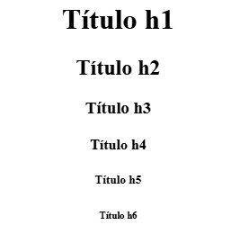
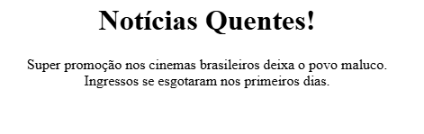
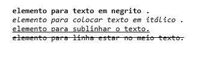
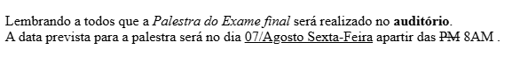
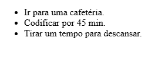
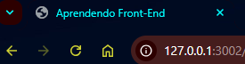
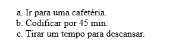
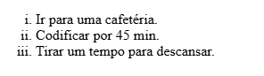
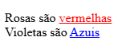

Um elemento geralmente consiste em uma tag de abertura, o conteúdo e uma tag de fechamento.
Uma tag é colocada entre colchetes angulares.
Tags: Palavras-chave entre colchetes angulares que definem como o conteúdo é exibido.
Elementos: Componentes formados por uma tag de início, conteúdo e uma tag de fim.
<p>Hello World!</p>
<p> É a tag de abertura.
Hello World! É o conteúdo.
</p> É a tag de fechamento.
O <p> é um elemento de parágrafo que informa ao navegador que o conteúdo interno é texto de "parágrafo".
<body>
<p>👋 Eu sou um novo desenvolvedor!</p>
</body>
O <body> é o elemento que define o "corpo" de um documento HTML e é onde será armazenado qualquer conteúdo que queremos exibir ao usuário
<body> É a tag de abertura inicia o "corpo".
<p>👋 eu sou um novo desenvolvedor!</p> É algum texto em um elemento de parágrafo.
</body> É a tag de fechamento encerra o "corpo".
Nota: Só pode haver um <body> em um arquivo.
Embora recuar o código HTML não seja necessário, fazer isso é uma boa prática porque torna seu código mais fácil de ler e visualizar os níveis de alinhamento.
Veja como recuar o bloco de código anterior:
<body>
<p>👋 Eu sou um novo desenvolvedor!</p>
</body>
Veja como é muito mais fácil ler dessa maneira.
Recomendasse dois espaços para recuos ou use a tecla Tab.
Imaginamos que queremos adicionar um título ao nosso site que exiba uma notícia.
Veja como faríamos isso usando um <h1> elemento de título e um <p> elemento de parágrafo:
<body>
<h1>Notícias Quentes! </h1>
<p>Político é encontrado no banheiro do hotel com a cueca cheia de dinheiro.</p>
</body>
Existem seis níveis de títulos, de <h1> a <h6>.
Observação: somente um <h1> deve ser usado em um arquivo .html.
Imaginamos que também queiramos adicionar uma nova linha dentro de um elemento de parágrafo. Pressionar enter não adiantará, pois o HTML ignora múltiplos espaços e quebras de linha dentro dos elementos.Então devemos usar a tag <br> (break) aqui.
A tag <br> adiciona uma quebra de linha:
<body>
<h1>Notícias Quentes!</h1>
<p>Super promoção nos cinemas brasileiros deixa o povo maluco.<br>Ingressos se esgotaram nos primeiros dias.</p>
</body>
Uma tag de fechamento automático não precisa ser fechada manualmente por uma tag de fechamento, ela não possui um fechamento separado </tag>. A tag break é a primeira que encontramos. O código final se tornará:
Agora que sabemos como exibir um texto básico, veremos como colocar frases em negrito, colocar novas palavras em itálico, sublinhar frases importantes.
Para isso, precisamos de elementos de formatação de texto! Eles deixam os textos padrão mais elegantes.
Aqui estão alguns exemplos comuns:
<b> elemento para texto em negrito.
<i> elemento para colocar texto em itálico.
<u> elemento para sublinhar o texto.
<s> elemento para linha estar no meio do texto.
É assim que eles são usados:
<b>Elemento para texto em negrito.</b>
<i>Elemento para colocar texto em itálico.</i>
<u>Elemento para sublinhar o texto.</u>
<s>Elemento para linha estar no meio do texto.</s>
O resultado é assim:
Observação: o <b> serve apenas para aplicar negrito ao texto estilisticamente, o HTML também tem um <strong> elemento usado para transmitir que o conteúdo interno é importante, além de estilizá-lo para ficar em negrito.
Aqui estão todas as quatro tags em ação em um anúncio de sala de aula:
<p>Lembrando a todos que a <i>Palestra do Exame final</i> será realizado no <b>auditório</b>.<br>
A data prevista para a palestra será no dia <u>07/Agosto Sexta-Feira</u> a partir das <s>PM</s>8AM.</p>
Isso ficará parecido com:
Observação: as tags acima são boas para aprender a estilizar texto com HTML básico, mas não são mais práticas recomendadas. Outras maneiras de estilizar texto serão abordadas no CSS.
Listas são uma ótima maneira de gerenciar o tempo, descobrir o que precisa ser feito e lembrar das coisas.
Aprenderemos sobre dois tipos de listas HTML:
<ul> Listas não ordenadas
<ol> Listas ordenadas
Para listas não ordenadas, também conhecidas como marcadores, comece com a tag <ul> e envolva cada item em um elemento <li> de item de lista. Assim:
<ul>
<li>Ir para uma cafetéria.</li>
<li>Codificar por 45 min.</li>
<li>Tirar um tempo para descansar.</li>
</ul>
Exemplo:
Para listas ordenadas, também conhecidas como listas numeradas, usamos o <ol>:
<ol>
<li>Ir para uma cafetéria.</li>
<li>Codificar por 45 min.</li>
<li>Tirar um tempo para descansar.</li>
</ol>
Exemplo:

Os links são parte integrante da ideia da internet. São eles que permitem aos usuários se conectar a outros sites e navegar na web.Podemos usar o <a> elemento âncora! Esta tag de link nos permite adicionar um hiperlink a um trecho de texto.
Vamos ver como podemos fazer isso:
<a href="https://archive.org/web">Internet Archive</a>
Aqui, o <a> elemento âncora é semelhante a outras tags, onde o texto dentro é o que é exibido. Mas e quanto ao href interior da tag de abertura?
Uma href (referência de hiperlink) é uma referência ou ponteiro para outro site que está vinculado em nosso HTML. Ao clicar no texto "Internet Archive", o HTML redirecionará para esse site, que no nosso caso é https://archive.org/web.
Observação: isso também pode ser usado para apontar para um e-mail ou número de telefone usando um parâmetro mailto:, tel: ou sms:
<a href="mailto:teste123@gmail.com"></a>
<a href="tel:212-555-2368"></a>
<a href="sms:320-250-HTML"></a>
E se quisermos adicionar imagens? Podemos usar um formato semelhante, mas com o <img> elemento de imagem.
<p>Aqui um gato fofo:</p>
<img src="https://placekitten.com/200/200">
O <img> elemento de imagem é outra tag de fechamento automático, portanto não tem uma tag de fechamento.
O src atributo, que significa “fonte”, especifica o caminho do arquivo da imagem.
"https://placekitten.com/200/200" é o caminho da imagem. Para a maioria das imagens, o caminho do arquivo pode ser encontrado clicando com o botão direito na imagem e selecionando "Copiar endereço da imagem".
Exemplo de como fica:
Aqui um gato fofo:

Agora que sabemos como criar uma página web, vamos voltar ao básico e explorar como estruturar melhor nossos arquivos HTML.
Aqui estão alguns itens essenciais em um arquivo .html !
Este <!DOCTYPE html> é a declaração de tipo de documento que aparece no topo de um arquivo .html e informa ao navegador que o arquivo foi escrito em HTML5. Ela é usada com um <html> elemento que contém todo o código processado na página.
Nós os pulamos, mas todos os arquivos HTML devem começar com uma <!DOCTYPE html> declaração e o <html> elemento:
<!DOCTYPE html>
<html>
Codigo vai aqui
</html>
Observe como o <!DOCTYPE html> não tem uma tag de fechamento, enquanto <html> o tem.
Dentro <html>, deve haver dois elementos:
<head>contém todas as informações do seu navegador que não estão visíveis na página.
<body>contém todo o conteúdo que você verá na página.
<!DOCTYPE html>
<html>
<head>
codigos não visiveis vão aqui
</head>
<body>
codigos visíveis vão aqui
</body>
</html>
O <title> elemento entra <head> e atribui texto à aba do navegador.
A aba do navegador fica assim quando você visita:
O código para isso seria:
<!DOCTYPE html>
<html>
<head>
<title> Aprendendo Front-End </title>
</head>
<body>
Mais codigos vão aqui
</body>
</html>
E todo o código "principal" vai para o <body> elemento.
Comentários são úteis para anotar a lógica e as intenções por trás de diferentes partes da nossa página web. Eles nos ajudam a entender o que nosso código está fazendo, especialmente se ele foi escrito há algum tempo.
Os comentários não devem beneficiar apenas quem escreveu o código, mas também devem ser úteis para quem for revisá-lo posteriormente.
Como comentar em HTML? É simples:
<!-- Eu sou um comentário --> <P>Eu não sou um comentário</P>
Tudo o que está cercado pelos marcadores de comentário <!-- --> é ignorado e não é renderizado no navegador:
<!-- Isso é um comentário. --> <!-- <P> isso tambem é um comentario</P> -->
Os comentários são super flexíveis porque podem abranger várias linhas:
<!--
Tudo isso é um comentário.
-->
Eles também podem ser usados dentro de um elemento:
<P>Esse comentário é visível. <!-- Mas esse não. --> </P>
Observação: não é recomendável exagerar nos comentários. Eles devem ser usados com moderação e removidos quando não forem mais necessários.
Atributos são configurações adicionais que podemos usar para personalizar um elemento.
Geralmente são pares nome/valor, como name="value", onde o nome e o valor são separados por um sinal de igual:
<element name="value">conteúdo</element> O name indica o atributo que estamos definindo para nosso elemento. O "value" atributo for(para) é colocado entre "" aspas duplas.
Por exemplo, por padrão, o <ol> elemento da lista ordenada usa números para rotular seus <li> elementos de item de lista.
<ol>
<li>Ir para uma cafetéria.</li>
<li>Codificar por 45 min.</li>
<li>Tirar um tempo para descansar.</li>
</ol>
Lista ordenada com itens numerados.
Se quisermos usar letras minúsculas:
<ol type="a">
<li>Ir para uma cafetéria.</li>
<li>Codificar por 45 min.</li>
<li>Tirar um tempo para descansar.</li>
</ol>
Lista ordenada com itens organizados por letra minúscula.
Ou, se quiser usar algarismos romanos:
<ol type="i">
<li>Ir para uma cafetéria.</li>
<li>Codificar por 45 min.</li>
<li>Tirar um tempo para descansar.</li>
</ol>
Lista ordenada com itens organizados por algarismos romanos minúsculos.
Já usamos alguns atributos diferentes no curso. Lembram quando aprendemos sobre imagens?

O <img> usa o src atributo para especificar o caminho do arquivo de uma imagem.
Além disso src, também podemos usar o altatributo para tornar nossas imagens mais acessíveis.
<img alt="garota usando um notebook" src="https://www.codedex.io/images/tier1.png">
Se a nossa imagem não aparecer por algum motivo, o alt texto será exibido! Isso permite que dispositivos assistivos leiam o nosso texto e descrevam a imagem.
Também nos deparamos com atributos ao aprender sobre o uso de links com <a> tags de âncora:
<a> href="https://www.codedex.io/">Codédex</a>
O atributo href é onde adicionamos uma URL que pode ser visitada quando o texto do hiperlink é clicado.
Também podemos usar o atributo target e defini-lo para "_blank" para fazer com que o link abra em uma nova aba do navegador:
<a> href="https://www.codedex.io/" target="_blank">Codédex</a>
Os dois atributos que mais encontraremos são os atributos classe id. Qualquer elemento pode usá-los.
Embora classe id sejam usados para rotular elementos, os dois apresentam diferenças importantes.
Um elemento pode receber vários class/valores na forma de uma lista separada por espaços:
<p>class="primeiro-value segundo-value terceiro-value">Hello, World</p>
Cada elemento pode ter apenas um id=valor, sem espaços. Cada valor de id deve ser único em toda a página:
<p> id="value">Hello, World</p>
Além disso, id pode ser usado para vincular a outra parte da mesma página, como o título! Isso pode ser associado ao atributo <a> de um elemento âncora por meio de um símbolo de hashtag, seguido pelo identificador usado para: href#id
<a> href="#saopaulo">Link para sao paulo</a>
<h2> class="city" id="saopaulo">São Pualo</h2>
Por fim, onde apenas um id pode ser atribuído a um único elemento, um class pode ser atribuído a muitos:
<h2> class="city" id="saopaulo">São Paulo</h2>
<h2> class="city" id="minasgerais">Minas Gerais</h2>
<h2> class="city" id="avai">avai </h2>
Os valores dos atributos classe id devem sempre estar em letras minúsculas. Se o nome for composto por várias palavras, eles devem ser separados por hífens -.
Nota: Uma boa maneira de lembrar class vs id... pode haver vários alunos em uma turma , mas cada aluno deve ter um ID exclusivo .
Uma das maneiras mais comuns de criar seções para uma página é com o elemento <div> (abreviação de "divisão").
O <div> é como um contêiner genérico sem significado específico. Este elemento e os class e id podem andar de mãos dadas.
Por exemplo, veja este site:
<div class="page-section" id="Sobre-mim">
<h2>Sobre mim</h2>
<p>Sou um aspirante a desenvolvedor web!</p>
</div>
<div class="page-section" id="social-media">
<h2>Social:</h2>
<ul>
<il>GitHub<il>
<il>Twitter<il>
<il>LinkedIn<il>
</ul>
</div>
O <div> é usado para agrupar conteúdo e ser rotulado pelos atributos classe id.
E ele só é algo importante semânticamente e nao visualmente.
Até agora, a aparência das nossas páginas tem sido bem esquelética. Apenas texto simples com uma lista, imagem ou link ocasional.
Mas e se houvesse maneiras de melhorar isso em nossos arquivos .html ? E, na verdade, existem!
Primeiro, podemos aplicar um atributo style a qualquer elemento HTML para estilizar certos aspectos desse elemento, como a cor que o texto deve ter:
<p>
Rosas são <spanstyle="color:red;">vermelhas</span>.
Violetas são <spanstyle="color:blue;">azuis</span>.
</p>
Este atributo utiliza uma sintaxe especial onde um estilo é composto por uma propriedade (ou seja, color) e um valor ( red), separados por :dois pontos. Vários estilos podem ser aplicados a um único elemento, mas devem ser separados por ponto e vírgula ;.
<p>
Rosas são <span style="color:red; text-decoration:underline;">vermelhas</span>.
Violeta são <span style="color:blue; text-decoration:underline;">azuis</span>.
</p>
A seguir está o parágrafo renderizado com nossos estilos aplicados ao elemento <span> do qual ele deixa a estilização apenas dentro do elemento span:
A color propriedade define a cor do texto de um elemento.
Adicione text-decoration formatação de texto (como underline), semelhante ao que os elementos <b>, <i>, <u> fazem.
Na verdade, esta é uma linguagem chamada CSS, que aprenderemos numa próxima.
Usar o style atributo para alguns elementos é uma coisa. Mas e se quisermos adicionar estilos a vários elementos diferentes? Ou se quisermos adicionar os mesmos estilos a cada instância de um elemento específico?
Alternativamente, o <style> elemento pode ser usado <head> para estilizar nossos elementos no <body>.
<!doctype html>
<html>
<head>
<style>
elemtendo do style vao aqui
</style>
<head>
<body>
elementos estilizado aparecem aqui
</body>
</html>
Os elementos podem ser selecionados dentro do <style> elemento usando { } chaves:
<style>
element {
propriedade: valor;
}
</style>
Lembra quando aprendemos sobre os atributos classe id? Dentro do <style> elemento, você pode usar um ponto final .(classe) ou uma hashtag #(id) para selecionar um ou mais elementos específicos que tenham um class ou id, respectivamente:
<!doctype html>
<html>
<head>
<style>
span {
text-decoration: underline;
}
#red-word {
color: red;
}
#blue-word {
color: blue;
}
</style>
</head>
<body>
<p>
Roses are <spanid="red-word">red</span>
Violets are <spanid="blue-word">blue</span>
</p>
</body>
</html>